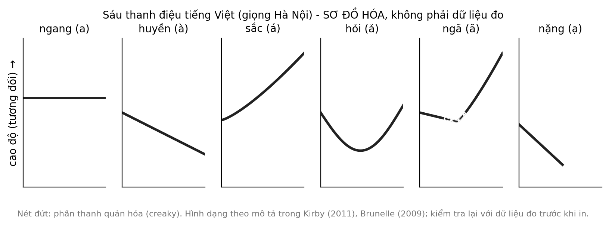
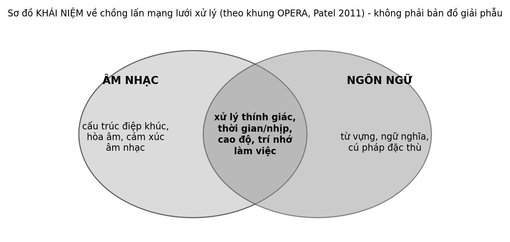

5 Ngôn ngữ có giai điệu — Thanh điệu tiếng Việt
Một học sinh đặt lời vào một giai điệu mình vừa nghĩ ra rồi hát cho bạn nghe. Bạn ấy nghe thấy một từ khác với từ mà em định hát. Cả hai bật cười, rồi em đổi một nốt và lời bỗng rõ nghĩa. Chuyện nhỏ ấy chạm vào một đặc điểm mà tiếng Việt có và nhiều ngôn ngữ khác không có: cao độ của giọng nói mang nghĩa của từ.
Câu hỏi trung tâm
Thanh điệu tiếng Việt cho ta lý do gì để kỳ vọng một mối liên hệ giữa cao độ của lời nói và cao độ của âm nhạc, và dữ liệu Việt Nam thực sự có gì? Chương này đi theo bốn tầng bằng chứng với độ tin cậy giảm dần. Tầng thứ nhất là mô tả ngữ âm học về các thanh điệu, khá vững. Tầng thứ hai là dữ liệu nhỏ nhưng có thật về cách lời tiếng Việt được đặt vào giai điệu. Tầng thứ ba là các nghiên cứu về tiếng Quan thoại và tiếng Quảng Đông, không phải tiếng Việt. Tầng thứ tư là một khoảng trống.
Cách đọc chương này
Đây là chương mà chúng ta phải cẩn thận nhất về việc nói điều gì về ai. Nhiều kết luận nổi tiếng về “người nói ngôn ngữ thanh điệu có tai nhạc tốt hơn” được rút ra chủ yếu từ người nói tiếng Quan thoại và tiếng Quảng Đông. Tiếng Việt có hệ thống thanh điệu riêng, với số lượng và đặc điểm khác, nên chúng ta không thể mặc nhiên chuyển các kết luận ấy sang người Việt. Mỗi khi chương này nói “người nói ngôn ngữ thanh điệu”, hãy kiểm tra xem bằng chứng đến từ ngôn ngữ nào.
Chương đi theo sáu bước: sáu thanh điệu và chất giọng; thanh điệu và giai điệu trong bài hát; khung OPERA; các nghiên cứu liên ngôn ngữ về cao độ; khoảng trống dữ liệu Việt Nam; và hệ quả sư phạm. Hai hoạt động cuối chương dùng chính giọng nói của người dạy và người học, không cần dụng cụ.
1. Sáu thanh điệu: cao độ và chất giọng
Trong ngôn ngữ học, thanh điệu là việc dùng cao độ để phân biệt nghĩa của từ (Yip, 2002). Tiếng Việt có sáu thanh: ngang, huyền, sắc, hỏi, ngã và nặng, theo mô tả chuẩn của giọng Hà Nội Sơ bộ (Đoàn, 1977; J. P. Kirby, 2011). Cùng một âm tiết thay đổi nghĩa tùy thanh, như “ma”, “má”, “mà”, “mả”, “mã” và “mạ”. Điểm đáng chú ý là thanh điệu tiếng Việt không chỉ khác nhau ở đường cao độ (tần số cơ bản của giọng, F0). Một số thanh, nhất là ngã, hỏi và nặng, còn đi kèm sự thay đổi chất giọng như giọng bị ngắt hoặc thanh quản hóa, và các nghiên cứu đo đạc ở giọng miền Bắc đã mô tả sự đan xen này Sơ bộ (Nguyễn & Edmondson, 1998).
Tần số cơ bản F0 là tốc độ rung của dây thanh, nghe như độ cao của giọng. Cao độ trong câu nói còn mang một lớp khác là ngữ điệu của cả câu, như lên giọng khi hỏi hay hạ giọng khi kết thúc. Tiếng Việt chồng hai lớp ấy lên nhau: lớp thanh điệu quyết định từ nào, lớp ngữ điệu thêm ý của người nói. Chúng ta chưa đối chiếu lại các giá trị đo trong giáo trình ngữ âm, nên không đưa số liệu tần số vào đây.
Hệ thống ấy cũng khác nhau giữa các vùng. Một nghiên cứu nghe cảm nhận cho thấy người nghe miền Bắc và miền Nam dựa vào những dấu hiệu khác nhau để phân biệt các thanh: người miền Bắc dùng cả đường cao độ lẫn chất giọng, còn người miền Nam dựa nhiều hơn vào đường cao độ Sơ bộ (Brunelle, 2009). Ở nhiều giọng miền Nam, ngã và hỏi được phát âm gần như nhau. Chúng ta chưa kiểm tra lại chi tiết này trong nguồn gốc, và nêu nó như một mô tả thường gặp. Điều này có nghĩa là mô tả “sáu thanh” là mô tả của một giọng cụ thể, và một giáo viên ở vùng khác có thể thấy nó không khớp với lời nói của chính mình.
Từ đó chúng ta có thể giữ lại một mệnh đề thận trọng: thanh điệu tiếng Việt biến mỗi câu nói thành một đường cao độ có nghĩa. Mệnh đề giải mã thành ba điều. Mỗi âm tiết mang một thanh, và đổi thanh thì đổi nghĩa. Chuỗi các âm tiết nối nhau thành một đường cao độ liên tục lên xuống theo câu nói. Và đường ấy mang nghĩa từ vựng, không chỉ mang ngữ điệu hay cảm xúc. Mệnh đề không nói rằng đường cao độ ấy là âm nhạc, và cũng không nói rằng người nói tiếng Việt hát hay hơn hay nhận biết cao độ tốt hơn. Cũng cần nhớ rằng tiếng Việt thường được mô tả là ngôn ngữ đơn lập, và nhiều từ gồm hai âm tiết ghép lại; thanh điệu gắn với từng âm tiết, không với cả từ, nên một từ hai âm tiết có hai thanh và một đường cao độ ngắn riêng.
Một câu hỏi hay gặp là: nói tiếng Việt có phải đã là “hát” không? Câu trả lời thận trọng là không, và điều khác nhau đáng nhớ. Theo mô tả quen thuộc trong nghiên cứu, cao độ trong lời nói thay đổi liên tục và không dừng ở những bậc cố định, còn trong nhiều truyền thống âm nhạc cao độ có xu hướng rời rạc, tức dừng ở những bậc rõ ràng Sơ bộ (Patel, 2008; Savage và c.s., 2015). Vì thế một thanh điệu là một đường trượt có hướng, còn một nốt nhạc là một bậc. Đó cũng là lý do chương này nói về sự va chạm giữa hai hệ thống chứ không nói rằng lời nói và nhạc là một.

2. Từ lời nói đến bài hát: thanh điệu và giai điệu
Trước hết cần ba thuật ngữ mượn từ lý thuyết âm nhạc. Xét hai âm tiết liền nhau trong lời hát. Nếu cao độ của lời đi lên giữa hai âm tiết và giai điệu cũng đi lên giữa hai nốt tương ứng, hoặc cả hai cùng đi xuống, ta gọi đó là chuyển động cùng chiều. Nếu một bên đi lên hoặc xuống còn bên kia giữ nguyên, đó là chuyển động chéo. Nếu một bên đi lên và bên kia đi xuống, đó là chuyển động ngược chiều. Ví dụ đơn giản: một từ thanh huyền, đi xuống, theo sau bởi một từ thanh sắc, đi lên, tạo thành một chuỗi “xuống rồi lên”; một giai điệu “lên rồi xuống” ở hai chỗ ấy sẽ ngược chiều với lời.
Khi hát một bài bằng ngôn ngữ thanh điệu, người sáng tác và người nghe đứng trước một câu hỏi thực tế: làm sao giai điệu không làm lời khó hiểu? Một tổng quan về hát bằng ngôn ngữ thanh điệu mô tả nguyên tắc phổ biến nhất qua các nghiên cứu: tránh “đặt ngược chiều”, tức không để giai điệu đi xuống ở chỗ cao độ của lời đi lên, hoặc ngược lại, giữa hai âm tiết liền nhau Sơ bộ (J. Kirby, 2021; J. Kirby & Ladd, 2016; Ladd & Kirby, 2020). Nguyên tắc này không đòi hỏi giai điệu bắt chước chính xác từng thanh; nó chủ yếu đòi hỏi hướng đi không đối nghịch.
Về tiếng Việt, một nghiên cứu phân tích 20 bản tân nhạc, thể loại nhạc phổ thông xuất hiện từ khoảng thập niên 1940, chủ yếu từ bản nhạc in, ghi lại hướng chuyển động của cao độ giữa các nốt kế tiếp và của thanh điệu giữa các âm tiết kế tiếp. Mô hình tốt nhất của nhóm tác giả đạt tỷ lệ chuyển động cùng chiều là 77%; chuyển động đối nghịch rất hiếm, thường xuất hiện ở ranh giới cụm giai điệu; chuyển động chéo, khi một bên giữ nguyên còn bên kia lên hoặc xuống, được cho phép trong một số trường hợp, nhất là với thanh ngang; và các tác giả đề xuất rằng việc tránh đối nghịch có thể quan trọng hơn việc khớp từng bước Sơ bộ (J. Kirby & Ladd, 2016). Có ba điều cần nói thêm về con số 77%. Định nghĩa “cùng chiều” phụ thuộc vào cách phân loại các thanh thành nhóm cao và thấp, và 77% là kết quả của mô hình tốt nhất sau khi thử các cách phân loại chứ không phải một dự đoán có trước. Đó là một kho dữ liệu nhỏ gồm các bản tân nhạc. Và việc tránh đối nghịch quan trọng hơn khớp từng bước vẫn là giả thuyết của các tác giả, cần kiểm chứng thêm. Một phân tích so sánh năm ngôn ngữ, trong đó có tiếng Việt, gợi ý rằng ngôn ngữ nào mà thanh điệu phân biệt nhiều từ hơn thì mức khớp với giai điệu cũng cao hơn; tác giả tự mô tả đây là kết quả bước đầu, cần nghiên cứu thêm Sơ bộ (Taniguchi, 2026).
Một công trình tổng hợp về lịch sử đặt lời theo thanh điệu ở Đông Nam Á mô tả cùng kho dữ liệu hai mươi sáng tác tân nhạc, làm việc chủ yếu từ bản nhạc có sẵn. Ví dụ một khổ thơ của một sáng tác nổi tiếng của Văn Cao chỉ có một chỗ đặt ngược chiều, liên quan đến thanh ngã vốn hiếm gặp, và công trình này còn so sánh với dữ liệu tiếng Thái, trong đó việc đặt ngược chiều phổ biến hơn so với tiếng Việt Sơ bộ (J. Kirby, 2021).
Với dân ca và hát ru, bằng chứng còn mỏng hơn nhiều. Một phân tích sơ bộ về một bài ru con miền Nam, so sánh các bản hát và các bản đọc cùng lời, đề xuất những khái niệm để mô tả cách thanh điệu hiện ra trong giai điệu, như “toneume” (đơn vị thanh điệu trong một âm tiết được hát) Sơ bộ (Phan & Ngô, 2016). Đây là một bài trình bày hội nghị về một bài hát; chúng ta không biết nó đã qua bình duyệt hay chưa, và không thể khái quát từ một bài ru. Trong các nguồn đã xem, chúng ta không thấy dữ liệu định lượng cho hát ru nhiều vùng, đồng dao, chèo, cải lương hay hát then.
Các kết quả trên cũng có hạn chế chung. Mẫu nhỏ và là các bài hát phổ thông, nên chưa chắc đại diện cho hát dân gian hay cho cách trẻ em hát. Việc mã hóa thanh điệu phụ thuộc vào giọng được chọn làm chuẩn. Và chúng chỉ mô tả cách người sáng tác đặt lời, không cho biết người nghe có hiểu lời tốt hơn khi tránh đối nghịch hay không; câu hỏi sau thuộc về nghiên cứu nghe hiểu, ví dụ ở tiếng Quảng Đông, nơi một nghiên cứu đã đặt câu hỏi người nghe hiểu thế nào lời một bài hát khi giai điệu chi phối cao độ Sơ bộ (Wong & Diehl, 2002).
3. Khung OPERA: một công cụ để đặt câu hỏi
Một khung lý thuyết có ảnh hưởng để nghĩ về mối liên hệ giữa âm nhạc và lời nói là giả thuyết OPERA của Patel. Nó đề xuất rằng luyện tập âm nhạc có thể thay đổi cách não xử lý lời nói khi năm điều kiện cùng thỏa mãn: các mạng não được dùng chung (overlap), âm nhạc đòi hỏi độ chính xác cao hơn lời nói (precision), hoạt động gắn với cảm xúc và phần thưởng (emotion), được lặp lại nhiều (repetition) và đòi hỏi sự chú ý (attention) Giả thuyết (Patel, 2011). Một phiên bản mở rộng bàn thêm về việc luyện âm nhạc không có ngôn ngữ có thể thay đổi cách não xử lý lời nói Giả thuyết (Patel, 2014). Cách trình bày đầy đủ hơn nằm ở một chuyên khảo về âm nhạc, ngôn ngữ và não (Patel, 2008).
Có ít nhất ba lý do để kỳ vọng một mối liên hệ giữa thanh điệu và cảm nhận cao độ nhạc. Cả hai dùng cùng một dấu hiệu âm thanh là cao độ. Người nói ngôn ngữ thanh điệu phải chú ý đến cao độ từ rất nhỏ để hiểu lời. Và có thể có những mạng xử lý dùng chung cho cao độ trong lời nói và trong nhạc. Nhưng mỗi lý do này cũng có một cách giải thích ngược: chú ý đến cao độ để hiểu lời có thể không kéo theo lợi ích trong nhạc, vì nhiệm vụ nhạc đòi hỏi các so sánh chính xác và nhớ lâu hơn; và việc dùng chung một mạng có thể gây nhiễu thay vì hỗ trợ, điều mà kết quả của nghiên cứu về người nói ngôn ngữ thanh điệu kém hơn ở một số điều kiện gợi ý ở mục 4.

OPERA hữu ích ở chỗ nó biến một câu hỏi mơ hồ, “âm nhạc có giúp lời nói không”, thành những điều kiện có thể kiểm tra từng cái. Nó cũng nhắc rằng không phải mọi hoạt động âm nhạc đều thỏa mãn năm điều kiện, nên không có lý do để mong mọi hoạt động âm nhạc đều có hiệu quả như nhau. Nhưng OPERA là một giả thuyết, các điều kiện của nó khó đo trực tiếp, và nó nói về hướng từ luyện nhạc sang xử lý lời nói.
Nếu dùng OPERA để đặt câu hỏi cho một lớp học, ta có thể hỏi: một hoạt động nói–hát có lặp lại đủ nhiều không, có đòi hỏi độ chính xác về cao độ không, có gắn với một bài hát các em thích không, và có giữ được sự chú ý của các em không. Đó là bốn trong năm điều kiện của khung. Điều kiện còn lại, mạng não dùng chung, không thể kiểm tra trong lớp. Việc một hoạt động đáp ứng các điều kiện không có nghĩa nó có hiệu quả; nó chỉ cho thấy hoạt động ấy có thể là ứng viên đáng thử Giả thuyết (Patel, 2011).
Tóm lại, OPERA là một cách đặt câu hỏi, không phải một lời hứa. Nó giúp phân biệt một hoạt động có lý do để thử với một hoạt động đã được kiểm chứng là hiệu quả, và hai điều ấy rất khác nhau. Hướng ngược lại, từ nói một ngôn ngữ thanh điệu sang cảm nhận cao độ âm nhạc, là một câu hỏi khác, có bằng chứng ban đầu ở mục tiếp theo và không phải điều OPERA khẳng định.
4. Các nghiên cứu liên ngôn ngữ về cao độ
Phần lớn những gì ta biết về người nói ngôn ngữ thanh điệu và nhận biết cao độ nhạc đến từ tiếng Quan thoại và tiếng Quảng Đông, và chúng ta xin nhắc lại điều này trước khi đọc từng kết quả.
Một nghiên cứu so sánh sinh viên nhạc viện ở Trung Quốc và ở Hoa Kỳ ghi nhận tỷ lệ có absolute pitch (khả năng gọi tên một cao độ mà không cần mốc so sánh) cao hơn ở nhóm Trung Quốc, và các tác giả đề xuất rằng việc nói ngôn ngữ thanh điệu từ nhỏ có thể liên quan đến một giai đoạn nhạy cảm gắn với lời nói Sơ bộ (Deutsch và c.s., 2006). Một nghiên cứu sau đó trong một nhạc viện ở Hoa Kỳ ghi nhận mối liên hệ giữa việc nói trôi chảy một ngôn ngữ thanh điệu và absolute pitch ở sinh viên gốc Đông Á Sơ bộ (Deutsch và c.s., 2009). Cả hai đều là so sánh quan sát, nên chưa tách được tác động của ngôn ngữ khỏi tuổi bắt đầu học nhạc, cách dạy và nền văn hóa học tập.
Cũng cần lưu ý rằng hệ thống thanh điệu của tiếng Quan thoại và tiếng Quảng Đông khác tiếng Việt về số lượng thanh, đường nét và vai trò của chất giọng. Vì vậy ngay cả khi các lợi thế quan sát được ở người nói hai thứ tiếng ấy là thật, chưa có lý do để cho rằng chúng chuyển nguyên vẹn sang người nói tiếng Việt.
Về cảm nhận và tạo ra cao độ, người nói tiếng Quan thoại và tiếng Quảng Đông được báo cáo là phân biệt và bắt chước cao độ nhạc chính xác hơn người nói tiếng Anh Sơ bộ (Pfordresher & Brown, 2009). Một nghiên cứu với người nói tiếng Quan thoại ghi nhận khả năng phát hiện thay đổi cao độ tốt hơn và phản ứng thần kinh phát hiện sớm hơn Sơ bộ (Giuliano và c.s., 2011). Ở bậc thân não, người luyện nhạc nói tiếng Anh mã hóa các đường cao độ của tiếng Quan thoại tốt hơn người không luyện nhạc Sơ bộ (Wong và c.s., 2007), và cả người nói tiếng Quan thoại lẫn người luyện nhạc mã hóa cao độ nhạc tốt hơn nhóm đối chứng Sơ bộ (Bidelman và c.s., 2011). Một nghiên cứu khác mô tả người nói ngôn ngữ thanh điệu và người luyện nhạc cùng có lợi thế về cao độ, và gợi ý quan hệ hai chiều giữa hai lĩnh vực Sơ bộ (Bidelman và c.s., 2013). Ở trẻ nhỏ, trẻ ba đến năm tuổi nói tiếng Quan thoại cho thấy cảm nhận cao độ nhạc tốt hơn trẻ nói tiếng Anh Sơ bộ (Creel và c.s., 2018).
Một lưu ý phương pháp chung cho cả nhóm nghiên cứu này: để kết luận ngôn ngữ gây ra lợi thế, người nghiên cứu cần so sánh các nhóm giống nhau về tuổi, học vấn, tuổi bắt đầu học nhạc và mức độ luyện tập, và cần tách việc nói một ngôn ngữ khỏi việc thuộc về một nền văn hóa hay một cộng đồng nhập cư. Rất khó làm được tất cả những điều này cùng lúc, và đó là lý do vì sao các nghiên cứu cắt ngang như trên chỉ gợi ý chứ chưa khẳng định.
Kết quả không hoàn toàn một chiều. Một nghiên cứu cho thấy nhóm người nói ngôn ngữ thanh điệu, hai mươi bốn người trong đó chỉ bốn người nói tiếng Việt, phát hiện thay đổi cao độ ở một số điều kiện kém hơn nhóm người nói tiếng Pháp Sơ bộ (Peretz và c.s., 2011). Một nghiên cứu về amusia bẩm sinh, tình trạng khó nhận ra cao độ trong nhạc, báo cáo rằng khó khăn ấy đi cùng khó khăn xử lý thanh điệu ở người nói ngôn ngữ không thanh điệu, gợi ý một phần cơ chế dùng chung Sơ bộ (Tillmann và c.s., 2011).
Có ba điều cần rút ra. Thứ nhất, bức tranh chung là bước đầu và có chiều ngược, nên nhãn đúng là Sơ bộ chứ không phải Trung bình. Thứ hai, ngay cả nghiên cứu duy nhất ở đây có người nói tiếng Việt cũng chỉ có một nhóm rất nhỏ, gộp chung với người nói tiếng Quan thoại, nên không thể tách kết quả cho tiếng Việt. Thứ ba, các nghiên cứu về trẻ em ở đây là về trẻ nói tiếng Quan thoại; chúng ta không có kết quả tương ứng cho trẻ Việt. Vì vậy, câu “người Việt có tai nhạc tốt nhờ thanh điệu” chưa có cơ sở, và cũng chưa có cơ sở để nói điều ngược lại.
Ngay cả nếu một lợi thế như vậy tồn tại ở người nói tiếng Việt, các nghiên cứu ở trên gợi ý rằng nó là một khuynh hướng của nhóm, với độ lớn vừa phải và chồng lấn nhiều giữa các nhóm, nên không thể dùng để dự đoán khả năng nhạc của từng đứa trẻ. Với giáo viên, kết luận thực tế chỉ là đừng mặc định điều gì: hãy quan sát và hỏi từng em.
5. Khoảng trống dữ liệu Việt Nam
Hãy xếp lại những gì chúng ta tìm thấy về tiếng Việt. Có mô tả ngữ âm học của các thanh, ở nhiều giọng. Có một nghiên cứu phân tích 20 bản tân nhạc, với dữ liệu được công bố mở, cho thấy xu hướng tránh đặt ngược chiều (J. Kirby & Ladd, 2016). Có một bài trình bày hội nghị về một bài ru con (Phan & Ngô, 2016). Có một phân tích so sánh năm ngôn ngữ có tiếng Việt, ở mức bước đầu (Taniguchi, 2026). Có một nghiên cứu về cao độ trong đó chỉ bốn người nói tiếng Việt (Peretz và c.s., 2011). Chúng ta không tìm thấy nghiên cứu nào đo cách trẻ em Việt nhận biết cao độ nhạc, tỷ lệ absolute pitch ở người Việt, hay hiệu quả của các hoạt động nói–hát trong lớp học Việt Nam.
Với người dạy, khoảng trống này có hai mặt. Mặt bất tiện là ta không thể viện dẫn một nghiên cứu Việt Nam để biện minh cho một hoạt động. Mặt có lợi là một giáo viên quan sát cẩn thận lớp của mình, ghi lại điều đã làm và điều đã xảy ra, đang đóng góp một mẩu dữ liệu mà hiện chưa ai có. Điều quan trọng là ghi lại trung thực, kể cả khi kết quả không như mong đợi.
Cần nói rõ giới hạn của chính việc tìm kiếm. Các tìm kiếm phục vụ chương này được thực hiện bằng tiếng Anh, qua công cụ tìm kiếm web, và chưa tra cứu có hệ thống các tạp chí tiếng Việt hay cơ sở dữ liệu trong nước. Vì vậy chúng ta không loại trừ khả năng có những nghiên cứu bị bỏ sót, và hoan nghênh người đọc bổ sung. Hiện chưa có dữ liệu đủ lớn ở Việt Nam, theo những gì chúng ta tìm thấy, để trả lời phần lớn các câu hỏi của chương này; đây là hướng nghiên cứu ưu tiên.
Có thể làm gì, và đo gì? Một là mở rộng kho dữ liệu: mã hóa thanh điệu và giai điệu của hát ru, đồng dao và dân ca các vùng, theo từng giọng, và công bố mở như nhóm Kirby và Ladd đã làm với dữ liệu của họ. Hai là thu âm cùng một lời được nói và hát bởi nhiều người ở nhiều vùng, để thấy cách thanh điệu hiện ra trong giai điệu. Ba là nghiên cứu nhận thức ở trẻ em: các bài kiểm tra phân biệt cao độ không dùng lời, kiểm soát tuổi học nhạc, và tận dụng một “thí nghiệm tự nhiên” sẵn có trong chính nước ta là sự khác nhau giữa các giọng, chẳng hạn giữa nơi ngã và hỏi còn phân biệt và nơi chúng đã hòa làm một. Bốn là nghiên cứu lớp học nhỏ về các hoạt động nói–hát và độ rõ lời.
Nếu phải chọn câu hỏi đáng làm trước, chúng ta đề xuất ba. Câu một: ở hát ru và đồng dao các vùng, hướng đi của giai điệu và hướng của thanh điệu có đối nghịch hiếm như ở tân nhạc không? Câu hai: người nghe Việt hiểu lời tốt hơn bao nhiêu khi giai điệu tránh đối nghịch so với khi không? Câu ba: các hoạt động nói–hát ngắn trong lớp có thay đổi độ rõ lời khi hát của học sinh không? Cả ba đều có thể bắt đầu bằng quy mô nhỏ và đều cần dữ liệu thô được chia sẻ để người khác kiểm tra lại.
Chúng ta cũng mời các giáo viên âm nhạc, nhà ngôn ngữ học và nhạc sĩ đang làm việc với hát ru và dân ca địa phương cùng góp ghi chép, bản ghi âm đã được người hát đồng ý và các bản mã hóa thanh điệu. Một kho dữ liệu nhỏ nhưng mở, có mô tả rõ nguồn và giọng của người hát, sẽ có giá trị hơn nhiều so với một kết luận lớn dựa trên ví dụ chọn lọc. Mọi nghiên cứu như vậy cần sự đồng ý của gia đình, tôn trọng các giọng địa phương và tránh xếp hạng giọng nào “chuẩn” hơn giọng nào.
6. Hệ quả sư phạm
Từ những gì có cơ sở và những gì còn thiếu, có thể rút ra vài điều thực tế, đều ở mức Thực tiễn sư phạm. Thứ nhất, giúp học sinh nghe được đường cao độ của lời nói: một em chú ý được thanh điệu khi nói thì dễ nhận ra chỗ nó va chạm với giai điệu khi hát Thực tiễn sư phạm. Thứ hai, khi chọn hoặc sáng tác giai điệu cho lời tiếng Việt, hãy tránh đối nghịch ở những từ quan trọng. Cách kiểm tra đơn giản là nói chậm câu lời theo nhịp của bài và xem hướng lên xuống của giọng nói có trái với hướng của giai điệu không Thực tiễn sư phạm.
Chẳng hạn, một giáo viên đang đặt lời mới vào một giai điệu có sẵn có thể làm theo ba bước: đọc câu lời thật chậm, vỗ nhịp của bài và lắng nghe xem ở mỗi cặp âm tiết giọng nói đi lên hay xuống; sau đó hát giai điệu và so xem hướng của hai bên ở cặp ấy có giống nhau không; cuối cùng chỉ sửa ở những chỗ chúng ngược nhau và là từ quan trọng cho nghĩa. Cách làm này không cần biết tên thanh, chỉ cần tai và một chút kiên nhẫn. Thứ ba, đừng giả định học sinh Việt có lợi thế về nhận biết cao độ vì nói tiếng thanh điệu; chưa có bằng chứng Việt Nam, và với những em khó nhận biết cao độ, giả định ấy có thể thành áp lực. Thứ tư, tôn trọng các giọng: một giáo viên miền Nam không cần “sửa” hỏi và ngã cho đúng giọng Hà Nội, và một giáo viên miền Bắc cũng không nên coi cách phát âm của vùng khác là sai. Cuối cùng, hát ru và đồng dao ở địa phương là kho ngữ liệu có giá trị; ghi âm chúng với sự đồng ý của người hát là một việc nhỏ có thể làm giàu dữ liệu Việt Nam.
Cơ chế và bằng chứng chính
| Phát biểu | Mức | Nguồn chính | Điều kiện / giới hạn |
|---|---|---|---|
| Tiếng Việt có sáu thanh với cao độ và chất giọng cùng tham gia (giọng Hà Nội) | Sơ bộ | (Brunelle, 2009; Đoàn, 1977; J. P. Kirby, 2011; Nguyễn & Edmondson, 1998) | mô tả ngữ âm; giọng khác nhau giữa các vùng |
| Nhạc hát bằng ngôn ngữ thanh điệu tránh đặt ngược chiều cao độ lời và giai điệu | Sơ bộ | (J. Kirby, 2021; J. Kirby & Ladd, 2016; Ladd & Kirby, 2020) | corpus bài hát phổ thông; chưa đo việc nghe hiểu |
| Tiếng Việt: 77% chuyển động cùng chiều trong 20 bản tân nhạc | Sơ bộ | (J. Kirby & Ladd, 2016) | mẫu nhỏ, từ bản nhạc in; không phải dân ca |
| OPERA: luyện nhạc có thể đổi cách xử lý lời nói khi đủ năm điều kiện | Giả thuyết | (Patel, 2011, 2014) | khó đo từng điều kiện; hướng từ nhạc sang lời |
| Người nói ngôn ngữ thanh điệu nhận biết cao độ nhạc tốt hơn | Sơ bộ | (Creel và c.s., 2018; Deutsch và c.s., 2006; Giuliano và c.s., 2011; Peretz và c.s., 2011; Pfordresher & Brown, 2009) | chủ yếu Quan thoại và Quảng Đông; kết quả có chiều ngược; không có dữ liệu tiếng Việt riêng |
| Hoạt động nói–hát trong lớp học Việt Nam | Thực tiễn sư phạm | không có thử nghiệm | khoảng trống dữ liệu |
Ứng dụng trong lớp học và gia đình Việt Nam
Hai hoạt động dưới đây không cần dụng cụ, và đều bắt đầu từ chính giọng nói của người dạy.
Mục tiêu: Giúp học sinh nghe và cảm nhận vai trò của thanh điệu bằng cách so sánh giọng nói “phẳng” với giọng nói cường điệu đường cao độ.
Chuẩn bị: Một dãy từ cùng âm tiết nhưng khác thanh, chẳng hạn “ma, má, mà, mả, mã, mạ”, viết trên bảng. Một câu ngắn do giáo viên chọn. Không cần dụng cụ.
Thời gian: 12 phút.
Các bước:
- Cả lớp đọc từng từ trong dãy bằng giọng nói bình thường của mình. Nhận xét nghe có khác nhau không.
- Thử đọc dãy từ “phẳng”, giữ giọng đều như đọc một dãy số, và hỏi nhau có phân biệt được từ nào ra từ nào không. Chú ý cảm giác khi thanh bị mất.
- Đọc lại từng từ, kéo dài và cường điệu đường cao độ, vẽ đường ấy lên không trung bằng tay.
- Làm tương tự với một câu ngắn: đọc bình thường, đọc phẳng, đọc cường điệu.
- Cuối cùng hát câu đó theo hai giai điệu khác nhau, một giai điệu theo hướng của lời và một giai điệu ngược hướng ở một từ, rồi cùng nhận xét điều gì xảy ra với việc nghe hiểu.
Quan sát gì: Các em nghe ra khác biệt nào, và ở thanh nào cảm giác “mất nghĩa” rõ nhất.
Biến thể: Mầm non: chỉ dùng hai hoặc ba từ, và vẽ bằng ngón tay trên không. Tiểu học: chơi trò đoán từ qua đường tay. THCS: so sánh cách phát âm các thanh giữa các thành viên đến từ những vùng khác nhau và thảo luận vì sao. Gia đình: cả nhà thử với các tên gọi thân mật.
Lưu ý: Không sửa giọng của ai và không chế giễu giọng nào. Hỏi và ngã khác nhau theo vùng; hãy để mỗi em dùng cách phát âm của mình. Đọc “phẳng” chỉ để cảm nhận thanh điệu, đừng biến nó thành trò nhại giọng vùng miền.
Mức bằng chứng của hoạt động: Thực tiễn sư phạm. Mô tả thanh điệu ở mục 1 là nền tảng ngữ âm; chưa có thử nghiệm đối chứng cho hoạt động này ở lớp học Việt Nam.
Mục tiêu: Gắn hướng lên xuống của thanh điệu với chuyển động tay, và thử xem giai điệu hát có đi cùng hướng ấy hay không.
Chuẩn bị: Giấy và bút cho mỗi em hoặc một cái bảng. Sáu từ có sáu thanh khác nhau, chẳng hạn “ma, má, mà, mả, mã, mạ”.
Thời gian: 10 phút.
Các bước:
- Giáo viên nói một từ, cả lớp dùng ngón tay vẽ đường lên xuống của từ ấy lên không trung hoặc lên giấy.
- Từng cặp: một em nói từ, em kia vẽ đường bằng tay mà không nhìn bảng, rồi đối chiếu.
- Cả lớp tìm xem thanh nào khó vẽ nhất và cùng nhận xét vì sao có thể khó, chẳng hạn vì thanh ngã và hỏi giống nhau ở một số giọng.
- Chọn hai hoặc ba từ, hát mỗi từ trên một nốt rồi trên hai nốt đi lên hoặc đi xuống. Cả lớp nhận xét nốt nào hợp với từ và nốt nào làm từ khó nghe.
- Kết thúc bằng việc mỗi em hát một câu ngắn, vừa hát vừa vẽ đường thanh điệu trong không trung.
Quan sát gì: Chỗ nào bàn tay và giọng đi cùng hướng, chỗ nào lệch, và em nào cần thêm thời gian.
Biến thể: Mầm non: vẽ theo từ quen thuộc như tên của các em. Tiểu học: vẽ đường lên giấy rồi tô màu. THCS: đổi vai, tự sáng tác hai câu hát và kiểm tra bằng đường tay. Gia đình: dùng cho tên người trong nhà.
Lưu ý: Mỗi vùng có cách phát âm riêng, hãy lấy giọng của em làm chuẩn cho đường tay của em đó. Em có khó khăn về vận động tay có thể vẽ bằng ngón tay trên bàn, bằng mắt theo bảng hoặc nói thay cho vẽ. Không ép ai hát một mình.
Mức bằng chứng của hoạt động: Thực tiễn sư phạm; chưa có thử nghiệm đối chứng cho quy trình này.
Giới hạn và lưu ý đạo đức
Chương này mạnh nhất ở phần mô tả ngữ âm và yếu nhất ở phần cho thấy tác động. Dữ liệu tiếng Việt về hát là nhỏ, từ bản nhạc in của một thể loại; các kết luận về “tai nhạc” của người nói ngôn ngữ thanh điệu phần lớn đến từ tiếng Quan thoại và tiếng Quảng Đông, và có chiều ngược; khung OPERA là giả thuyết. Chúng ta không có nghiên cứu nào cho thấy một hoạt động nói–hát cụ thể cải thiện kỹ năng nghe nhạc, đọc hay ngôn ngữ ở học sinh Việt Nam.
Cần tính đến chi phí cơ hội và khả năng tiếp cận. Vài phút dành cho các hoạt động này là vài phút không dành cho việc khác, và hoạt động nói–hát có thể khiến một số em ngại hoặc xấu hổ, nhất là em có giọng vùng miền khác với bạn bè hay thầy cô. Điều quan trọng nhất ở đây là phẩm giá: giọng của mỗi người là một giọng đúng. Cũng cần thận trọng với việc gắn nhãn học sinh theo ngôn ngữ hay nguồn gốc, chẳng hạn như cho rằng một em sẽ giỏi hay kém nhạc vì tiếng mẹ đẻ. Cuối cùng, chương này dựa trên tìm kiếm bằng tiếng Anh qua web, nên có thể bỏ sót nghiên cứu trong nước; điều này nhắc rằng khoảng trống dữ liệu Việt Nam có thể một phần là khoảng trống của việc tìm kiếm.
Để tránh hiểu sai, chương này không nói bốn điều. Nó không nói rằng người Việt có tai nhạc tốt hơn hay kém hơn người khác. Nó không nói rằng một giai điệu đối nghịch với thanh điệu là sai hay xấu; đó chỉ là một lựa chọn có thể làm lời khó nghe hơn. Nó không nói rằng hát giúp trẻ Việt học đọc hay học ngôn ngữ tốt hơn; câu hỏi ấy được xem ở Chương 6. Và nó không nói rằng một giọng vùng miền nào đó chuẩn hơn giọng khác.
Tóm tắt chương
- Tiếng Việt có sáu thanh điệu với cao độ và chất giọng cùng tham gia; hệ thống khác nhau giữa các vùng Sơ bộ (Brunelle, 2009; J. P. Kirby, 2011).
- Hát bằng ngôn ngữ thanh điệu thường tránh đặt ngược chiều cao độ của lời và giai điệu; ở tiếng Việt, dữ liệu là một mẫu nhỏ các bản tân nhạc Sơ bộ (J. Kirby & Ladd, 2016; Ladd & Kirby, 2020).
- OPERA là một khung giả thuyết để hỏi khi nào luyện nhạc có thể đổi cách xử lý lời nói Giả thuyết (Patel, 2011).
- Kết quả liên ngôn ngữ về cao độ chủ yếu đến từ tiếng Quan thoại và Quảng Đông, có chiều ngược, và không có kết quả riêng cho tiếng Việt Sơ bộ (Peretz và c.s., 2011; Pfordresher & Brown, 2009).
- Hoạt động nói–hát trong lớp là thực hành hợp lý nhưng chưa có thử nghiệm đối chứng ở Việt Nam Thực tiễn sư phạm.
Câu hỏi phản tư
Khi bạn hoặc một học sinh hát một câu, có chỗ nào mà lời nghe thành một từ khác? Hướng lên xuống của giọng nói ở chỗ ấy trái hay khớp với giai điệu, và điều bạn quan sát nằm ở đâu trên thang bằng chứng của chương này?